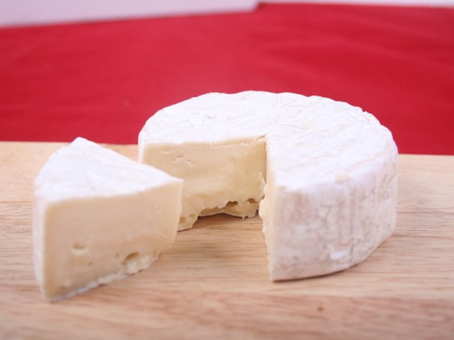
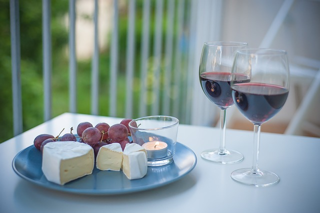
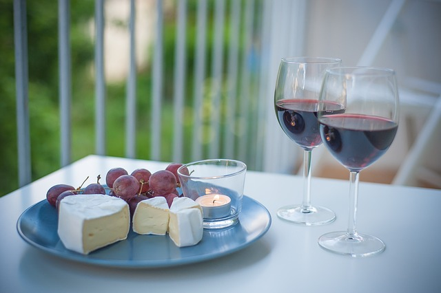

Goudse kaas
Goudse kaas is één van de bekendste kaassoorten ter wereld. Het is een typisch Hollandse kaas met een volle, romige smaak. Lekker voor op brood of op een cracker, door warme gerechten of bij de borrel.
Brie

Brie is een Franse witschimmelkaas, die behoort tot de zachte witte-korstkazen. De kaas is vernoemd naar de natuurlijke regio Brie, gelegen in het Île-de-France. Hoe smaakt brie? Dat is een vraag waarop je veel verschillende antwoorden kunt geven. Het is ook afhankelijk van het soort en hoe rijp de kaas is. Vaak heeft de kaas een milde, nootachtige smaak.
Parmezaan
Parmezaanse kaas is een Italiaanse kaas (ook wel parmezaan genoemd) die uit de omgeving van Parma komt. Daar heeft de kaas zijn naam dan ook aan te danken. Het is een vrij harde kaas die vaak wordt gebruikt bij Italiaanse gerechten, zoals pasta en pizza. De naam Parmezaan omvat meerdere kazen. Kaas mag namelijk zo genoemd worden wanneer het uit de Italiaanse streek Parma komt.
 
